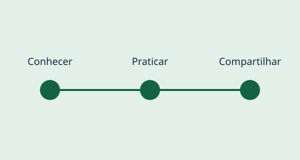

Primeiros Passos Digitais
Oficinas de uso básico do computador, organização de arquivos, e-mail e navegação segura.
Público: pessoas que estão começando a utilizar recursos digitais.
Como colaborar: apoiar oficinas e preparar materiais didáticos acessíveis.
Participar desta iniciativa